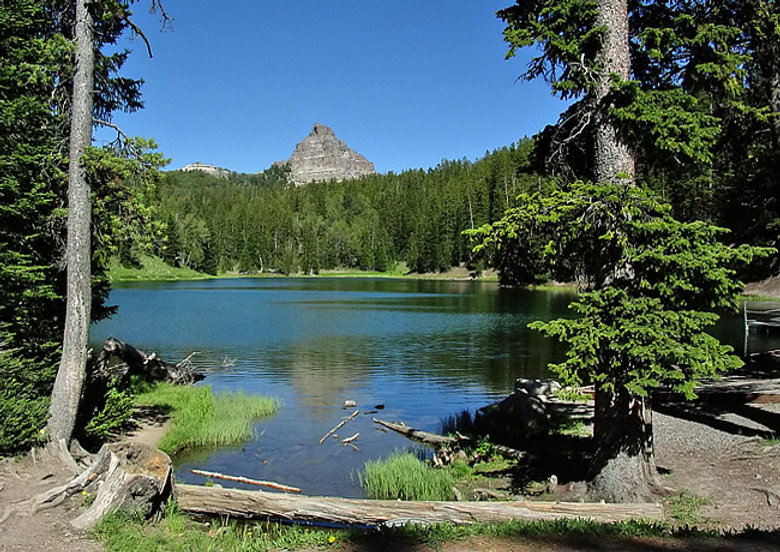
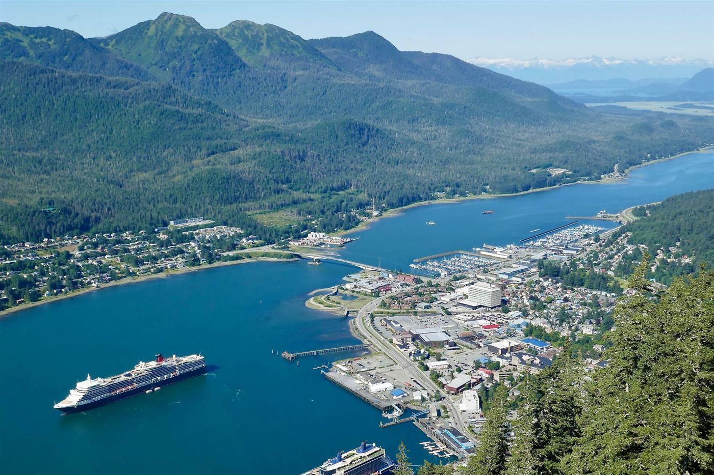
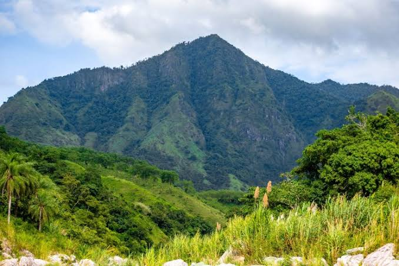
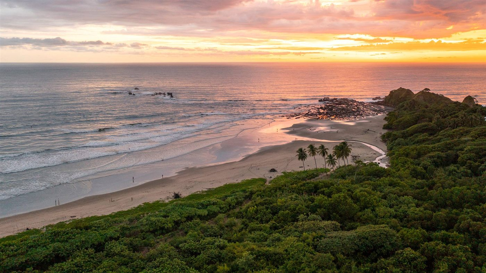

Check out each trip below, then rank them in the form, from favorite to least favorite.

Togwotee Pass · Between Grand Teton and Yellowstone
These are examples, not actual recommendations.
June through October. September is ideal.
Queen Creek · Free stay with a pool, hot tub, and desert adventures
Pool, hot tub, sauna, cold plunge, gazebo, built-in grill, fire pit
March–April or late October–November.

Juneau · Glaciers, whales, and world-class fishing
These are examples, not actual recommendations.
June through September. September is ideal.

Utuado & Rincón · Mountains, river pools, and surf
📍 Utuado on map 📍 Rincón on map
These are examples, not actual recommendations.
Suggested split: 2 nights in the mountains (Utuado / Jayuya) and 2 nights on the coast (Rincón).
April to May.

Nosara · Surf, jungle, and wellness on the Pacific coast
These are examples, not actual recommendations.
December through April. May and November are ideal.